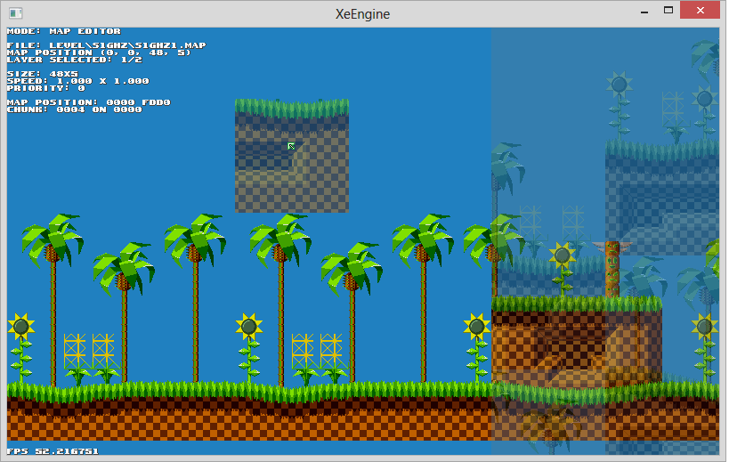
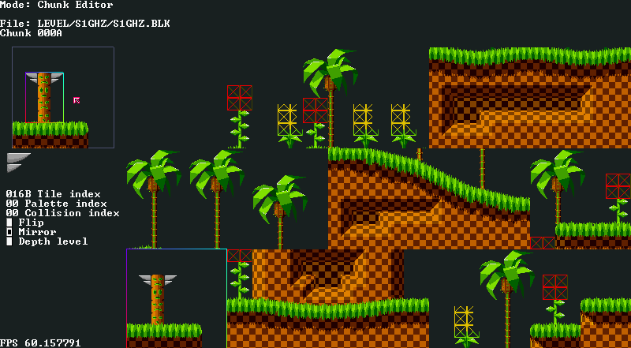
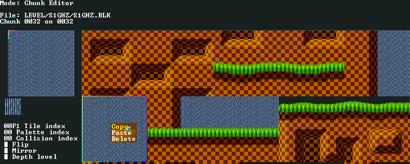
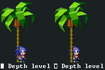

Documentazione ufficiale di XeEngine
Sommario
Introduzione
XeEngine è un framework, formato da una serie di librerie che aiutano lo sviluppo di giochi o software principalmente 2D. Il framework è pensato per essere multipiattaforma ed ha un certo livello di astrazione, infatti verranno offerte varie funzioni che comunicheranno con il sistema operativo su una determinata macchina senza conoscere questi ultimi. Il framework offre un sistema a livelli, che aiuta lo sviluppo in base a ciò che lo sviluppatore cerca (vedere Gli strati di XeEngine). E' possibile comunicare con lo XeSDK per sviluppare direttamente con il codice nativo, con XeScript per generare del bytecode compatibile con ogni macchina senza necessariamente ricompilare il codice per ognuna, XeWidget che consente di creare applicazioni basati su bottoni e caselle, ed infine XeEditor, l'editor integrato che può aiutare allo sviluppo di giochi. Tutto questo insieme forma XeEngine.
NOTA: XeEngine è un prodotto ancora in fase di sviluppo, perciò la documentazione potrebbe non essere aggiornata instantaneamente in base alle ultime aggiunte nell'eseguibile o viceversa.
Prerequisiti
I requisiti minimi sono 64MB di memoria RAM, un processore da almeno 0.5 GHz ed una scheda video da 32MB che supporta OpenGL 1.1 e / o DirectX 9.0a.
I requisiti ottimali invece, sono 128MB di memoria RAM, un processore da 1 GHz ed una scheda video da 128MB che supporta OpenGL 2.1 e / o DirectX 9.0c assieme a Pixel Shader 2.0.
Soddisfando i requisiti ottimali, si ha una gestione nativa delle palette, incrementando enormemente le performance. Nel caso dei requisiti minimi il sistema di palette viene emulato, ma questa tecnica non garantisce performance soddisfacenti.
Come sistema operativi e macchine, la build corrente è stata provata solo su una macchina avente Microsoft(r) Windows 7, ma è garantita la compatibilità anche da Windows XP in poi. Sono in programma delle cross-builds per sistemi Unix, Android, Windows Phone 8, Windows RT e Raspberry Pi. Non ci sono piani per i sistemi Mac OS X e iOS.
XeSDK
XeSDK è un Software Development Kit sviluppato in C++11. Per includerlo nel proprio progetto, includere l'header XeSDK.h e linkare la liberria libXeSDK.lib.
La versione correntemente in sviluppo richiede il linguaggio di programmazione C++ e un IDE basato sul compilatore MVCPP, come ad esempio Visual Studio.
Gli strati di XeEngine
L'engine è formato a strati, chiamati livelli, dove ogni strato contiene un set di istruzioni:
- Gestione della memoria, I/O e chiamate di sistema
- Gestione delle texture
- Gestione dei livelli, font ed entità
- Gestione delle animazioni ed oggetti
Livello 1
Questo è il livello base, consente di astrarre il sistema operativo e la macchina su cui XeEngine si appoggia. I moduli presenti dovrebbero bastare per ogni operazione di I/O richiesta sviluppatore, evitando ogni comunicazione diretta con il sistema. Questo permette di poter ricompilare lo stesso codice per più macchine, senza modificare il codice.
Livello 2
Il livello corrente mette a disposizione dei moduli che permettono di semplificare ed automatizzare il compito di alcune operazioni. Vedremo che è possibile usare dei nuovi tipi, caricare un'immagine di qualsiasi formato (riconosciuta dalla sua estensione) a patto di avere la sua classe registrata, di organizzare le varie immagini caricate in una atlas-texture, di usare un buffer hardware / software per i vertici, stampare su schermo facilmente elementi 2D e molto altro.
- Application
- String
- Color
- File
- Memory
- Node
- Image
- Graphics
Livello 3
Questo è il livello che interessa ai game developers. Mette a disposizione una serie di strumenti che permettono di automatizzare la stampa dei livelli, AI e collisioni tra entità e molto altro con poche e semplici funzioni.
XeBase
Definisce una serie di tipi e costanti che semplificano lo sviluppo.
Tipi:
sbyte: tipo con segno ad 8 bit
s8: tipo con segno ad 8 bit
byte: tipo senza segno ad 8 bit
u8: tipo senza segno ad 8 bit
sshort: tipo con segno a 16 bit
s16: tipo con segno a 16 bit
ushort: tipo senza segno a 16 bit
u16: tipo senza segno a 16 bit
sint: tipo con segno a 32 bit
s32: tipo con segno a 32 bit
uint: tipo senza segno a 32 bit
u32: tipo senza segno a 32 bit
MemoryHandle: puntatore generico ad un indirizzo di memoria; alias di void*
FileHandle: puntatore generico ad un file; alias di void*
Hash:
tipo di grandezza machine-dependent, usato per generici hash
UID: tipo di grandezza machine-dependent, usato per generici ID
Color32: tipo usato per i colori a 32 bit; alias di unsigned int
Color: alias di Color32
Costanti:
nullptr: puntatore generico nullo
SAFE_DELETE(p): richiama delete se il puntatore non è nullo
SAFE_ADELETE(p): richiama delete[] se il puntatore non è nullo
HIPART(n):
prende i 16 bit alti di una variabile n a 32 bit
LOPART(n):
prende i 16 bit bassi di una variabile n a 32 bit
EXPORT: esporta una funzione o una classe in un modulo
System
Gestisce tutte le chiamate di sistema. E' un modulo importante che serve per separare il sistema operativo della macchina con il software in sviluppo.
Enumerazioni:
- FileSeekMode:
FILESEEK_SET: si sposta in un file specificando una posizione assoluta (quindi a partire dalla posizione 0 del file)
FILESEEK_CUR: si sposta in un file specificando una posizione relativa (quindi a partire dalla posizione corrente del file)
FILESEEK_END: si sposta in un file specificando una posizione assoluta partendo dalla fine del file
- Language:
LANGUAGE_ENGLISH
LANGUAGE_ITALIAN
LANGUAGE_FRENCH
LANGUAGE_GERMAN
LANGUAGE_SPANISH
LANGUAGE_JAPANESE
- MessageBoxType:
MessageBoxType_Error: lancia una finestra come messaggio di errore
MessageBoxType_Warning: lancia una finestra come messaggio di avviso
MessageBoxType_Info: lancia una finestra come messaggio di informazione
Strutture:
- DirectoryEntry
char name[256]: nome del file corrente. Da notare che esso non conterrà il percorso dell'entry.
size_t length: lunghezza in byte del file. Impostato solitamente a 0 quando l'entry è una directory.
size_t attributes: insieme degli attributi dell'entry
- bool readonly: il file è di sola lettura
- bool hidden: il file è nascosto
- bool system: il file è di sistema
- bool directory: l'entry è una directory
- u2 encrypted: se da 1 a 3, rappresenta il tipo di criptazione, 0 se il file è decriptato
- u2 compressed: se da 1 a 3, rappresenta il tipo di compressione, 0 se il file è decompresso
Funzioni:
- void MemoryCopy(MemoryHandle dst, MemoryHandle src, u32 size)
Copia un insieme di byte da
una porzione di memoria ad un'altra.
MemoryHandle dst [in]: destinazione dei dati
MemoryHandle src [in]: sorgente dei dati
u32 size [in]: quantitativo in byte di dati da copiare
- void MemoryFill(MemoryHandle dst, u32 size, u8 value = 0)
Riempe una porzione di memoria con un determinato dato.
MemoryHandle dst [in]: destinazione dei dati
u32 size [in]: quantitativo in byte di dati da scrivere
u8 value [in]: valore in byte da scrivere per tutta la memoria
- s32 MemoryCompare(MemoryHandle mem1, MemoryHandle mem2, u32 size)
Compara due zone di memoria
MemoryHandle mem1 [in]: prima zona di memoria
MemoryHandle mem2 [in]: seconda zona di memoria
u32 size [in]: numero di byte da confrontare
s32 [return]: ritorna 0 se mem1 e mem2 sono uguali, > 0 se l'ultimo byte di mem1 confrontato è maggiore dell'ultimo byte di mem2 confrontato, < 0 se viceversa.
- u32 StringLength(const char* str)
Ottiene la lunghezza di una stringa
const char* str [in], stringa di ingresso da cui verrà calcolata la lunghezza
u32 [return]: ritorna il numero di caratteri presenti dall'inizio della stringa sino al carattere di fine stringa '\0' escluso
- Language GetLanguage()
Ottiene la lingua correntemente impostata. Se la lingua ritornata non è riconosciuta dall'sdk, viene ritornato
LANGUAGE_ENGLISH
- void Delay(u32 millisecond)
Blocca il thread dell'applicazione per il numero specificato di millisecondi
- u32 GetTimer()
Ottiene il timer di sistema corrente
- void ShowMessageBox(MessageBoxType type, const char* message)
Visualizza una finestra con un messaggio.
MessageBoxType type: tipo della finestra
const char* message: stringa che contiene il messaggio da visualizzare
- bool MemoryAlloc(MemoryHandle& mem, u32 size)
Alloca dinamicamente una porzione di memoria nella RAM di sistema
MemoryHandle& mem [out]: Contiene il puntatore alla memoria che verrà allocata
u32 size: numero di byte da allocare
bool [return]: ritorna true se la memoria è stata allocata con successo, viceversa ritorna false. Nel caso ritorna false, mem viene impostato a nullptr.
- bool MemoryAllocZero(MemoryHandle& mem, u32 size)
Alloca dinamicamente una porzione di memoria nella RAM di sistema ed imposta il suo contenuto a 0
MemoryHandle& mem [out]: Contiene il puntatore alla memoria che verrà allocata
u32 size: numero di byte da allocare
bool [return]: ritorna true se la memoria è stata allocata con successo, viceversa ritorna false. Nel caso ritorna false, mem viene impostato a nullptr.
- bool MemoryResize(MemoryHandle& mem, u32 size)
Ridimensiona una zona di memoria precedentemente allocata dinamicamente. Se la zona di memoria specificata è nulla, allora viene allocata normalmente. Nel caso di un ridimensionamento positivo, il nuovo spazio di memoria non sarà inizializzato, in caso di ridimensionamento negativo, i dati precedenti verranno persi.
MemoryHandle& mem [in, out]: Contiene il puntatore alla memoria già precedentemente allocata
u32 size: numero di byte da allocare
bool [return]: ritorna true se la memoria è stata riallocata con successo, viceversa ritorna false.
- bool MemoryFree(MemoryHandle& mem)
Libera la porzione di memoria di sistema specificata. Ogni dato contenuto in esso sarà perso.
MemoryHandle& mem [in, out]: Contiene il puntatore alla memoria precedentemente allocata. Dopo questa chiamata, mem sarà impostato a nullptr.
- FileHandle FileOpen(const char* filename, bool readonly = true)
Apre un file in modalità binaria, posizionando il cursore all'inizio del file. Il file specificato può avere un percorso relativo (.\file.bin) o assoluto
(C:\\file.bin).
const char* filename: Il nome del file da aprire.
bool readonly [opt]: Specifica se il file da aprire sarà in sola lettura o meno
FileHandle [return]: Ritorna il puntatore al file. Può ritornare nullptr se la funzione non è andata a buon fine.
- FileHandle FileAppend(const char* filename)
Apre un file in modalità binaria, posizionando il cursore alla fine del file. Il file specificato può avere un percorso relativo (.\file.bin) o assoluto
(C:\\file.bin).
const char* filename: Il nome del file da aprire.
FileHandle [return]: Ritorna il puntatore al file. Può ritornare nullptr se la funzione non è andata a buon fine.
- FileHandle FileCreate(const char* filename)
Crea un file vuoto in modalità binaria. Il file specificato può avere un percorso relativo (.\file.bin) o assoluto
(C:\\file.bin). Se un altro file con lo stesso nome è già stato creato, verrà sovrascritto.
const char* filename: Il nome del file da aprire.
FileHandle [return]: Ritorna il puntatore al file. Può ritornare nullptr se la funzione non è andata a buon fine.
- void FileClose(FileHandle&)
Chiude un file e ne libera le risorse ad esso associate
FileHandle [in, out]: Il puntatore al file. Verrà impostato a nullptr.
- bool FileRead(FileHandle, void* data, u32 length)
Legge una porzione di dati da un file.
FileHandle [in]: Il puntatore ad un file correttamente aperto.
void* data [in]:
La locazione di memoria dove i dati verranno inseriti. Deve essere un puntatore valido che può ospitare length bytes.
u32 length: Il numero di byte da leggere.
- bool FileWrite(FileHandle, const void* data, u32 length)
Scrive una porzione di dati da un file.
FileHandle [in]: Il puntatore ad un file correttamente aperto.
const void* data:
La locazione di memoria dove i dati verranno letti. Deve essere un puntatore valido di almeno di dimensione length bytes.
u32 length: Il numero di byte da scrivere.
- bool FileSeek(FileHandle, int position, FileSeekMode)
Sposta il cursore del file.
FileHandle [in]: Il puntatore ad un file correttamente aperto.
s32 position: Direzione su cui si deve spostare il cursore del file e di quanti byte si deve muovere.
FileSeekMode: La modalità di spostamento del cursore.
- u32 FilePosition(FileHandle)
Ottiene la posizione del cursore dal file specificato.
FileHandle [in]: Il puntatore ad un file correttamente aperto.
u32 [return]: La posizione del cursore in byte
- u32 FileLength(FileHandle)
Ottiene la dimensione del file specificato.
FileHandle [in]: Il puntatore ad un file correttamente aperto.
u32 [return]: Dimensione del file in byte.
- u32 FileLengthFrom(const char* filename)
Ottiene la dimensione del file specificato a partire dal nome del file.
const char* filename: Il nome del file da cui ricavare la dimensione.
u32 [return]: Dimensione del file in byte.
- bool FileExist(const char* filename)
Controlla se il file specificato esiste o meno.
const char* filename: Il nome del file.
bool [return]: Ritorna true se il file
- bool DirectoryOpen(const char* directoryname)
Apre una directory per l'elenco del suo contenuto
const char* directoryname [in]: percorso della directory da aprire; deve finire con '\\' o con '/'
bool [return]: true se la cartella è stata aperta con successo, false viceversa
- bool DirectoryNext(DirectoryEntry& entry)
Legge l'entry successiva della cartella
DirectoryEntry& entry [out]: contenuto dell'entry
bool [return]: true se l'entry è stata letta con successo, false se tutte le entry sono state giù lette
- void DirectoryClose()
Chiude la directory correntemente aperta.
- void DirectoryGetCurrent(char[] dir, size_t length)
Ottiene il percorso della directory corrente
char[] dir [out]: percorso della directory corrente
size_t length [in]: lunghezza dell'array dir
- bool DirectorySetCurrent(const char[] dir)
Imposta la directory corrente
const char[] dir [in]: percorso della directory corrente da impostare
bool [return]: ritorna true se la directory è stata impostata, viceversa ritorna false
Math
Questa piccola liberia matematica fornisce il minimo indispensabile per le operazioni matematiche basilari.
Funzioni:
- void Initialize()
Inizializza la liberia matematica. Necessaria per funzioni come Sinf e Cosf.
- float Sinf(float degree)
Calcola il sinus a partire dai gradi sessagesimali specificati. Questa funzione differisce da sinf usata dalla liberira math.h dato che non accetta radianti come parametro di ingresso ed è meno precisa. Utilizzare Sinf di XeSDK nelle zone critiche del codice come i loop, perché molto più veloce di sinf.
- float Cosf(float degree)
Calcola il cosinus a partire dai gradi sessagesimali specificati. Questa funzione differisce da cosf usata dalla liberira math.h dato che non accetta radianti come parametro di ingresso ed è meno precisa. Utilizzare Cosf di XeSDK nelle zone critiche del codice come i loop, perché molto più veloce di cosf.
- T Min(T a, T b)
Restituisce il più piccolo tra a e b. La funzione si avvalora dell'operatore '<' e di un qualsiasi tipo di variabile in ingresso.
- T Max(T a, T b)
Restituisce il più grande tra a e b. La funzione si avvalora dell'operatore '>' e di un qualsiasi tipo di variabile in ingresso.
List
TODO
Geometry
TODO
Video
TODO
Input
TODO
Audio
TODO
Window
Gestisce la finestra dove il gioco verrà visualizzato. Nel caso di sistemi operativi su personal computers, questo genererà una finestra vera e propria, in smartphone e tablet questa sarà semplicemente la gestione di tutto quel rettangolo che conterrà l'applicazione.
TODO
Stage
Si occupa dell'intera gestione dello stage. Lo stage non è altro che un insieme di aree, detti atti. Ogni atto può avere una sua coordinata X, Y ed una sua dimensione verticale ed orizzontale, assieme ad una descrizione di quale palette e texture deve essere caricata. Tutti gli atti, messi insieme, formano la stagemap, utile per automatizzare il passaggio da una stanza all'altra del protagonista in giochi esplorativi con meccaniche di backtracking o rpg. Ogni atto, inoltre, dispone di una sua mappa 2D di dimensioni massime 32768x32768 pixel. Ogni mappa può essere composta fino a 8 layer differenti che possono essere disegnati anche contemporaneamente o abilitati e disabilitati in runtime (XeEngine potrebbe non girare al massimo della velocità con tutti ed 8 i layer attivi sui device più datati). Ogni layer è composto da una matrice di blocchi quadratici, chiamati chunks. E' possibile scegliere fino a 1024 combinazioni diverse di chunks. Di default, la grandezza in pixel di ogni chunk, è di 128 pixel, quindi la mappa di Chunk per un layer di dimensione 32768x32768 pixel occuperà 128KB ( (32768 / 128) ^ 2 * sizeof(u16) ). Inoltre, ogni chunk non è altro che un'altra matrice per la descrizione di elementi più piccoli chiamati tile (per maggiori info vedere TileEntry). Di default, un tile è grande 16x16 pixel e un chunk è una matrice di 8x8 tiles, perciò questo giustifica la dimensione orizzontale e verticale di 128 pixel. Ogni layer può avere degli effetti di deformazione per cercare di simulare un effetto di parallasse senza ricorrere a layer multipli. L'effetto di deformazione prende l'intero layer e lo suddivide in singole linee orizzontali o verticali e le muove ad una velocità differente. Le singole linee vengono spostate in base al deform factor (una variabile che viene moltiplicata con la coordinata X od Y della camera del livello per ricavare la sua posizione), al deform speed (una variabile che sposta ad ogni frame la linea in base al valore specificato in esso) e al deform wave (un vettore contenente delle coordinate che spostano la linea solo per quel frame, usato spesso per avere l'effetto acqua). L'uso della deformazione del layer è necessaria anche quando si desidera che uno o più layers si muovano ad una velocità differente rispetto alla telecamera. Ogni stage gode anche di una palette dedicata grande 256 entries, offrendo sino a 65536 colori differenti contemporaneamente su schermo. Il contenuto della palette può essere modificato in runtime, offrendo un'altra serie di effetti grafici. Ritornando ai tile, ognuno di essi può avere due fieldbox differenti: questi vengono selezionati in base al percorso del personaggio. Per percorso (path) si intende ad esempio un muro che prima impediva al protagonista di andare oltre che poi, grazie allo swap path, da accesso; Al livello logico può essere visto come quando il protagonista passa ad una profondità maggiore dello stage (senza cambiare layer) e, di conseguenza, non trova più il muro come ostacolo visto che era posizionato ad una profondità minore. Questo effetto viene ottenuto assegnando ad un path una fieldbox piena e all'altro una fieldbox vuota; successivamente, con un trigger, il path del protagonista viene invertito, in modo che esso possa interagire con uno o con l'altro percorso. Può essere molto utile per offrire al giocatore percorsi multipli con un solo layer e, di conseguenza, un drastico minor consumo di risorse e di tempo di sviluppo. Inoltre, il protagonista può interfacciarsi con il tile fino a 4 modi differenti. Il primo viene detto nullfield e, come si può intuire dal nome, non attiva nessun sensore di collisione. Il secondo è detto topfield, dove solo i sensori bassi vengono attivati; è possibile infatti passare attraverso il tile da sotto, da destra e da sinistra, ma mai da sopra (quindi l'unico punto considerato solido). Un esempio di ciò è quando il personaggio si trova sotto ad una piattaforma e intende salirci sopra. Il terzo è detto sidefield, dove vengono valutati tutti i sensori tranne quelli alti dell'entità; molto simile al topfield, solo che il tile è considerato solido anche ai suoi lati. Infine abbiamo il fullfield, dove ogni sensore viene valutato; in questo caso infatti, il personaggio non potrà mai passare attraverso quel tile (fieldbox permettendo). Ognuno dei due percorsi per tile, ha la propria tipologia di fieldbox. Infine, ma non meno importante, ogni fieldbox possiede un'angolazione, che permette di simulare la forza di salite e discese che influenzerà direttamente la velocità dell'entità. L'angolo verrà descritto in un singolo byte, quindi offrendo una precisione di 1.40625 gradi (relativamente bassa per ambiti scientifici, ma è abbastanza per un gioco).
Costanti:
Strutture:
- TileEntry
u16 tile: indice del tile dalla texture
u8 palette: palette da associare al tile
bool depth: profondità del tile; se impostato a true, il tile sarà stampato sopra l'entità
bool flip: il tile viene disegnato con l'asse Y invertita
bool mirror: il tile viene disegnato con l'asse X invertita
bool reserved: RISERVATO
u2 path1: tipologia del fieldbox nel percorso 1
u2 path2: tipologia del fieldbox nel percorso 2
XeWidget è una liberira per creare delle interfacce grafiche all'interno di XeEngine. Essa fornisce una serie di controlli (chiamati Widget) che serviranno per la creazione di finestre, caselle di testo, caselle di spunte, bottoni e molto altro.
I controlli:
Controllo Master
Si occupa di gestire l'intera libreria Widget. Essa si occupa della creazione e distruzione di ogni tipo di risorsa.
Tipi:
PosType: tipo con segno a 16 bit.
SizType: tipo con segno a 16 bit.
Text: tipo const char* usato generalmente per i testi.
WidgetName: come Text, rappresenta il nome univoco del widget.
Position: tipo Geometry2 con PosType applicato
Size: tipo XeEngine::Geometry2 con SizType applicato
Color: tipo XeEngine::Color32
Enumerazioni:
- Alignment
Alignment_Default: inserisce il controllo nella posizione assoluta specificata.
Alignment_TopLeft: inserisce il controllo a partire dall'alto a sinistra.
Alignment_TopCenter: inserisce il controllo a partire dall'alto centrandolo orizzontalmente.
Alignment_TopRight: inserisce il controllo a partire dall'alto a destra.
Alignment_MidLeft: inserisce il controllo a partire da sinistra centrandolo verticalmente.
Alignment_Center: inserisce il controllo centrandolo sia orizzontalmente sia verticalmente.
Alignment_MidRight: inserisce il controllo a partire da destra centrandolo verticalmente.
Alignment_BottomLeft: inserisce il controllo a partire dal basso a sinsitra.
Alignment_BottomCenter: inserisce il controllo a partire dal basso centrandolo orizzontalmente.
Alignment_BottomRight: inserisce il controllo a partire dal basso a destra.
- Anchor
Anchor_None: non ancora il controllo. Può essere usato come parametro di default.
Anchor_Top: ancora il controllo verso l'alto.
Anchor_Bottom: ancora il controllo verso il basso.
Anchor_Left: ancora il controllo verso sinistra.
Anchor_Right: ancora il controllo verso destra.
Funzioni:
- bool Initialize(XeEngine::Window*, const char* fontfilename)
Inizializza XeWidget e carica varie risorse come il font e la palette associata.
XeEngine::Window [in]:
la finestra di XeEngine. Ne modificherà di essa OnResize ed OnMouse.
const char* fontfilename [in]:
specifica il nome del file che contiene il font (privo di estensione e risoluzione).
bool [return]: ritorna true se l'inizializzazione è andata a buon fine, viceversa ritorna false.
- void Destroy()
Distrugge ogni risorsa associata a XeWidget.
- void Run()
Esegue l'intero sistema di XeWidget e ne disegna i Widget.
- void Add(Widget*)
Aggiunge un Widget al controllo Master. I controlli aggiunti verranno disegnati e risponderanno agli eventi. Solitamente vengono aggiunti i Form, ma è teoricamente possibile aggiungere ogni tipo di componente.
Widget* [in]: il controllo da aggiungere.
- u16 GetFontW()
Ritorna la larghezza in pixel di una singola lettera.
- u16 GetFontH()
Ritorna l'altezza in pixel di una singola lettera.
Widget
Enumerazioni:
- MouseHandled
MouseHandled_No: indica che il mouse non è stato gestito da nessun componente.
MouseHandled_Yes: indica che il mouse è stato gestito dal componente corrente.
MouseHandled_Child: indica che il mouse è stato gestito da un componente figlio.
Strutture:
- KeyEvent
key: contiene la chiave associata al pulsante premuto
ch: contiene il carattere ASCII associato al pulsante premuto
alt: flag che indica se il tasto ALT è stato premuto
ctrl: flag che indica se il tasto CTRL è stato premuto
shift: flag che indica se il tasto SHIFT è stato premuto
caps: flag che indica se il CAPS ON è attivo
- MouseEvent
x, y: coordinate virtuali del mouse figlio
button: bottone correntemente premuto
nClick: numero di click consecutivi
Metodi:
- Widget(WidgetName)
Costruttore di Widget.
WidgetName [in]: nome del controllo.
- Widget(WidgetName, Text)
Costruttore di Widget.
WidgetName [in]: nome del controllo.
Text [in]: testo associato al controllo
- Widget(WidgetName, Text, Position, Size)
Costruttore di Widget.
WidgetName [in]: nome del controllo.
Text [in]: testo associato al controllo
Position [in]: posizione del controllo
Size [in]: dimensione del controllo
- const XeEngine::String& GetType() const
Ottiene il tipo del controllo come stringa.
const XeEngine::String& [return]: il tipo del widget.
- void SetType(const char*)
Imposta il tipo del controllo come stringa
const char* [in]: nome del tipo
- const XeEngine::String& GetName() const
Ottiene il nome del controllo.
const XeEngine::String& [return]: il nome del widget.
- void SetType(const char*)
Imposta il nome del controllo come stringa
const char* [in]: nome del controllo
- bool CompareType(const XeEngine::String&)
Compara
un widget con un tipo di widget. E' simile all'istanceof di Java. Un esempio può essere: form1->CompareType( XeEngine::String("Form") ).
const XeEngine::String& [in]: il tipo di widget come stringa.
bool [return]:
ritorna true se il tipo è corrispondente, viceversa ritorna false.
- void Draw(PosType x, PosType y)
- virtual MouseHandled SendMouse(PosType x, PosType y, PosType vx, PosType vy, u16 button, u16 action, bool scanchilds)
- void SetParent(Widget*)
- void AddChild(Widget*)
- void RemoveChild(Widget*)
- void RemoveChildAt(size_t)
- void RemoveChildAll()
- Widget* SearchChild(WidgetName)
Form
TODO
Label
TODO
Button
TODO
CheckBox
TODO
XeEditor
Lo XeEditor è un editor integrato nel gioco, disponibile solo nella modalità Developer dell'eseguibile XeEngine. Durante l'esecuzione del gioco, in qualsiasi momento è possibile accedere alla parte dedicata ai Developers premendo uno dei tasti da 1 a 9 sulla tastiera:
- NOT IMPLEMENTED YET
- NOT IMPLEMENTED YET
- Il Map editor
- L'Object editor
- Il Palette editor
- Il Texture editor
- Il Chunk editor
- L'Hitbox editor
- NOT IMPLEMENTED YET
- La modalità Game
- Informazioni varie
Il Map editor
Il Map editor, abilitabile col tasto '3', consente di modificare il layout dei layers di una singola mappa.

Come sfondo verrà visualizzato parte del livello, a destra vi è localizzata una barra laterale trasparente dove è possibile selezionare uno dei chunk da applicare al livello, infine sopra il puntatore del mouse c'è il blocco che si sta per applicare nel livello. Mentre il cursore è sul livello, con il pulsante sinistro del mouse il Chunk correntemente selezionato verrà applicato nella posizione dove il Chunk di anteprima è posta, con il pulsante destro del mouse o con lo spostamento tramite schermo touchscreen sarà possibile spostare il livello e con il pulsante medio del mouse sarà possibile prendere il Chunk del livello dove vi è posto il puntatore del mouse. Il click destro del mouse è associato al pulsante della tastiera CTRL+'G' (get chunk). E' possibile anche annullare l'operazione di riposizionamento dei chunk premendo la classica combinazione di tasti CTRL+Z oppure è possibile disattivare le funzionalità dell'editor e della barra laterale con CTRL+E. E' possibile scorrere il livello con i pulsanti direzionali della tastiera o del Joypad. Con i pulsanti +/- oppure L1/R1 è possibile selezionare il layer precedente/successivo contenuto nella mappa.
Quando il puntatore del mouse è posizionato sulla lista dei Chunk, quest'ultima diventerà opaca finché il puntatore del mouse vi sarà sopra. Qui sarà possibile selezionare uno dei Chunk per poi inserirli nel livello. Con i tasti direzionali della tastiera o del Joypad, è possibile scorrere tra i Chunk, con PGUP/L1oppure con PGDOWN/R1 è possibile scorrere pagina per pagina la lista dei Chunk, con HOME/L2 sarà possibile tornare al primo Chunk della lista mentre con END/R2 si tornerà al Chunk selezionato. Negli hardware dotati di schermo touchscreen è possibile scorrere la lista con lo scrolling del dito.
Le informazioni sullo schermo rappresentano il nome del file dove vi è contenuta la mappa correntemente visualizzata, la posizione e lo spazio occupato nella mappa totale (utile per giochi come Metroid e Castlevania), il layer correntemente selezionato, la grandezza in Chunk del layer corrente (è possibile ricavare la dimensione in pixel del livello moltiplicando quei valori per 128), la velocità di scrolling del layer, priorità del layer, posizione corrente della mappa sull'editor, il Chunk correntemente selezionato e quello dove vi è sopra il cursore del mouse.
L'Object editor
TODO
Il Palette editor
TODO
Il Texture editor
TODO
Il Chunk editor
Il Map editor, abilitabile col tasto '7', consente di modificare i Chunks.

In alto a sinistra si troverà il file assocato al gruppo di Chunk visualizzabili in questa modalità. L'operazione di salvataggio agirà su quel file. Sotto il nome del file viene descritto il Chunk correntemente selezionato. Il Chunk selezionato è riportato subito sotto mentre i Chunk selezionabili sono riportati nella lista a destra.

E' possibile scorrere la lista con i pulsanti Su, Giu, PageUP, PageDown, Home ed End (quest'ultimo porta al Chunk correntemente selezionato). Un menu contestuale è disponibile per operazioni come Copy, Paste e Delete. Combinazioni di tasti come CTRL+C, CTRL+V e DELETE sono concesse. E' anche possibile scorrere la lista con la rotella centrale del mouse.

E' possibile anche effettuare una selezione multipla tenendo premuto il tasto di selezione del mouse. Da qui si possono effettuare operazioni come Cut, Copy, Paste e Delete, con le rispettive combinazioni CTRL+X, CTRL+C, CTRL+V e DELETE. Queste operazioni sono disponibili anche dal menu contestuale, che però permette di agire singolarmente su un solo tile. E' possibile annullare le operazioni di modifica sino a 64 volte con la combinazione CTRL+Z. Durante la selezione, il primo tile selezionato sarà quello modificabile sotto il Chunk correntemente selezionato.

Operazioni come flipping e mirroring sono supportate sui singoli tile grazie alle apposite checkbox

Il Depth level è molto utile nel caso si vuole specificare se un determinato tile è presente avanti o dietro il livello delle entità. Questo si può applicare in ogni layer di una singola mappa.
L'Hitbox editor
TODO
La modalità game
TODO
Tipi di file
TODO
Fisica e collisioni
Variabili da impostare per ogni oggetto:
- acceleration, velocità di accelerazione di un oggetto.
- deceleration, velocità di frenata.
- friction, forza di decelerazione dell'oggetto quando esso è sul terreno.
- minspeed, velocità minima dell'oggetto. abs(inertia) non può essere minore di esso.
- maxspeed, velocità massima dell'oggetto. abs(inertia) non può essere maggiore di esso.
- gravity, forza di gravità che trascina l'oggetto verso il basso. Teoricamente il valore di gravità è unica e l'oggetto cade in base al suo peso, ma per semplicità di progettazione si è deciso di adottare solo questa variabile.
- maxgravity, velocità gravitazionale massima.
- jump, forza del salto.
- jumpmin, numero di pixel minimi per il salto.
- airaccmin, troppo difficile da spiegare a parole WTF
- brake, se abs(inertia) >= brake, allora fa vedere l'animazione della frenata.
- ducking, se abs(inertia) < ducking, allora l'oggetto può eseguire le funzioni LookDown e LookUp.
Variabili di uso interno dell'Engine
- inertia, velocità dell'oggetto. Questa è la variabile che è influenzata da acceleration, deceleration, friction e simili.
- speedx, velocità X dell'oggetto, dipende da inertia ed angle.
- speedy, velocità Y dell'oggetto, dipende da inertia ed angle.
- angle, angolo di rotazione dell'oggetto. Utile per trasformare inertia in speedx e speedy o per descrivere come l'oggetto si deve comportare con le Field collision.
Terminologie
- Camera, è quell'area di visualizzazione del livello che solitamente segue un oggetto. I suoi parametri sono le coordinate X, Y e Z.
- BPP (Bit Per Pixel), quanto un singolo pixel di un'immagine prende di spazio espresso in bit.
- Tile, una singola immagine quadratica grande 16x16 o comunque multipla di 16.
- Palette, una riga di colori a cui un Tile di 4bpp o 8bpp fa riferimento. Una palette contiene 256 colori.
- CLUT (Color Look-Up Table), o anche tabella di colori, è una raccolta di palette.
- CLUT 3D, tabella tridimensionale di colori dove la dimensione X è il colore al quale un singolo pixel fa riferimento, la dimensione Y è la palette correntemente selezionata e la dimensione Z è la CLUT correntemente selezionata
- Tilesheet, raccolta di Tile posizionata in una texture a tre dimensioni. Una tilesheet può avere una dimensione espressa in Tile di 16x16 ed una profondità da 1 ad un massimo di 256
- Chunk, un blocco quadratico di dimensione 8x8 tile (o comunque un multiplo di 2). Ogni Tile contenuto in un Chunk ne descrive a quale Palette fare riferimento, il tile di riferimento nella texture ed altre proprietà quali la profondità, Flip e Mirror e proprietà del percorso.
- Scene, è un blocco di dimensione quadratica 4x4 Chunk.
- Flip, una tecnica di visualizzazione che consente di ruotare orizzontalmente o verticalmente di 180° una immagine. Soliamente vengono usati i termini FlipX (o Mirror) o FlipY per rappresentare il tipo di rotazione.
- Hitbox, è quell'area che genera un evento di collisione se condivide almeno uno stesso pixel nell'area di gioco
- Field collision, è una Hitbox che avviene tra un oggetto ed il terreno. L'oggetto non potrà mai passare attraverso questo tipo di Hitbox. Ogni Field collision ha il proprio flag di evento ed una propria angolazione verticale ed orizzontale con una precisione di 1,411
- Entity collision, è il tipo di collisione che avviene tra due entità, generando un evento.
- Layer, un foglio virtuale bidimensionale con una sua dimensione espressa in Scene che raccoglie un insieme di Chunk. Questo stato mette a disposizione un intero livello o sfondo.
- Layout, descrive il modo con cui i Chunk sono collocati in un Layer.
- Layout loop, è una tecnica che permette di ripetere il livello dall'inizio una volta arrivato agli estremi di un lato del Layout (vedere Labyrinth Zone di Sonic 1 e Sky Sanctuary di Sonic & Knuckles). Genericamente è usato per i Layer di background.
- Layer boundary, bordo virtuale di un Layer. La telecamera può agire solo all'interno del Layer boundary ed ogni entità (tranne eccezioni se specificato) viene distrutta se fuori.
- Room, una raccolta di fogli virtuali dove ne sistema la loro priorità. Una Room ha una propria posizione e dimensione espressa in Scene.
- Map, la mappa di un livello. Ogni mappa ha una propria posizione espressa in Scene che la colloca in un punto specifico del World (vedi giochi come Metroid o Castlevania). Ogni Map contiene un insieme di Room.
- World, chiamata anche World Map, è l'intero mondo di gioco. Contiene un insieme di Map.
- Layer deformation, chiamato anche Parallax, è una tecnica che permette di deformare in linee orizzontali un Layer. Ogni linea orizzontale è spostata con una certa velocità in base alla posizione della Camera o in base ad una propria velocità fissa. E' frequentemente utilizzato nei giochi di Sonic the Hedgehog nei background o sott'acqua per il foreground.
- Collision index, è quella tabella che descrive quale Hitbox di tipo Field collision è associata ad un singolo Tile.
- Path, è un percorso che descrive quale dei due Collision index un tile deve utilizzare. Utile per esempio per i loop in Sonic o per i tubi in Chemical Plant di Sonic 2.
- Zone, chiamato anche Stage o Level, è una zona è una raccolta di Act. Rappresenta un singolo livello di gioco.
- Act, è un insieme di elementi da caricare, come Tilesheet, CLUT 3D, Map, Collision index etc. .
- Node, è un generico oggetto privo di funzionalità e collisioni. Usa coordinate assolute ed è privo di texture, animazioni ed effetti. Può avere nodi figli e nodi padri.
- Sprite, sottoclasse di Node, è un'immagine statica che ha una texture, una serie di effetti ed animazioni.
- Entity, sottoclasse di Sprite, è un oggetto dotato di Script, di una serie di Hitbox di tipo Entity collision e di una propria fisica.
- Script, è un listato di operazioni programmate. Può essere associato ad un Act o ad un Entity.
Crediti
XeEngine, XeSDK, XeWidget, XeEditor e XeScript sono prodotti interamente sviluppati da Luciano Ciccariello (Xeeynamo). Per maggiori informazioni è possibile contattarmi in privato via e-mail all'indirizzo xeeynamo@hotmail.com. Se parte del prodotto, risorse del gioco o dell'editor e/o questa documentazione è stata fornita senza permessi, per favore contattatemi all'indirizzo sopra riportato.
{kind=link}
{kind=link}
{kind=link}


{kind=link}